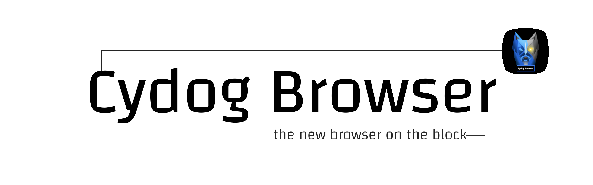

Minimalist Browsing
Cydog Browser makes it easier for you to accomplish your daily tasks. It also helps you get the information you need faster with a lightweight design.


The Cydog Difference
Many mobile browsers are not very efficient for the end user. Cydog's purpose is to be everything desktop and mobile browsing is not in ways that complement security and privacy instead of hampering it.
Privacy with Efficiency
Cydog leads the mobile browser market in terms of privacy. Its unique coding methodology maximizes a user's clicks to efficiently reduce their data footprint without inconvenience.

Unique UI
Sometimes a unique User Interface is just a gimmick. With Cydog, the UI is designed to provide automation without hassle, making security and life easier - not harder.